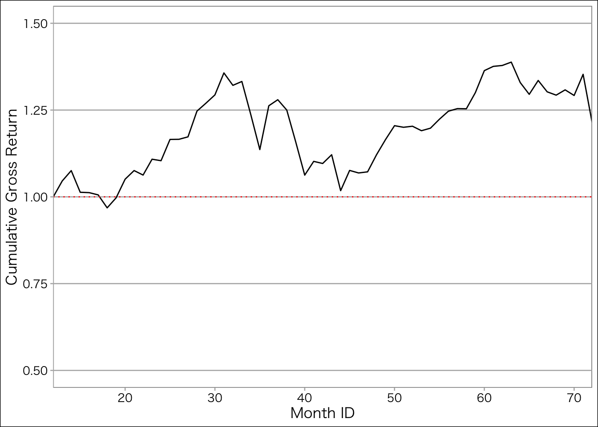

library(tidyverse) # いつものやつ
library(broom) # データフレームを整形するパッケージ
library(ggthemes)
mystyle <- list (# ggplotのテーマ
theme_calc(), # ggthemesパッケージ
scale_colour_calc(), # ggthemesパッケージ
theme(
text = element_text(
size=12, # フォントサイズ
family = "HiraKakuProN-W3" # ヒラギノフォント
)
)
)6 ファクターモデルの導入
6.1 ファクター構築の準備
- CAPMの実証的検証に必要な市場ポートフォリオの構築
- ある特徴に基づいて各銘柄をランキングにし，ランキングに応じたポートフォリオの構築
6.1.1 市場ポートフォリオの構築
市場ポートフォリオ (market portfolio)とは，市場に存在する全ての危険資産を時価総額比率で保有したポートフォリオをいいます。 厳密には，リスク資産には株式や債券に代表される金融資産の他、不動産や貴金属などの実物資産も含まれますが、実用上はTOPIXやS&P500といった株価指数と同一視されることが多いです。
ここでは，データとして入手可能な全銘柄の時価総額と個別銘柄の時価総額の比率をウェイトとして市場ポートフォリオを構築します。
毎年1月に年次リバランスを想定し，前年度末の時価総額に比例した保有費率の計算をします。
Rの事前
第6章で使うデータを読み込みます。 第5章で作成し，保存したcsvファイルを読み込みます。
# ファイルの読み込み
monthly_data <- read_csv("data/ch05_output1.csv") # 第5章の最後で保存した
annual_data <- read_csv("data/ch05_output2.csv") # 第5章の最後で保存したここでもデータの構造を確認しておきます。 monthly_dataは月次の株価の終値，一株当り配当額，発行済株式数，調整係数，無リスク利子率，時価総額といった株式データが収録されています。 annual_dataは年次の売上高や当期純利益など財務データが収録されています。
glimpse(monthly_data)Rows: 95,040
Columns: 24
$ year <dbl> 2015, 2015, 2015, 2015, 2015, 2015, 2015, 2015, 2015, 2015…
$ month <dbl> 1, 2, 3, 4, 5, 6, 7, 8, 9, 10, 11, 12, 1, 2, 3, 4, 5, 6, 7…
$ month_ID <dbl> 1, 2, 3, 4, 5, 6, 7, 8, 9, 10, 11, 12, 13, 14, 15, 16, 17,…
$ firm_ID <dbl> 1, 1, 1, 1, 1, 1, 1, 1, 1, 1, 1, 1, 1, 1, 1, 1, 1, 1, 1, 1…
$ stock_price <dbl> 954, 960, 1113, 1081, 1317, 1366, 1353, 1209, 1291, 1407, …
$ DPS <dbl> 0, 0, 0, 0, 0, 29, 0, 0, 0, 0, 0, 29, 0, 0, 0, 0, 0, 40, 0…
$ n_shares <dbl> 2422000, 2422000, 2422000, 2422000, 2422000, 2422000, 2422…
$ adj_coef <dbl> 1, 1, 1, 1, 1, 1, 1, 1, 1, 1, 1, 1, 1, 1, 1, 1, 1, 1, 1, 1…
$ R_F <dbl> 6.506826e-04, 5.834099e-04, 6.114423e-04, 6.848180e-04, 7.…
$ ME <dbl> 2310588000, 2325120000, 2695686000, 2618182000, 3189774000…
$ R <dbl> NA, 0.006289308, 0.159375000, -0.028751123, 0.218316374, 0…
$ Re <dbl> NA, 0.005705898, 0.158763558, -0.029435941, 0.217579602, 0…
$ industry_ID <dbl> NA, NA, NA, NA, NA, NA, NA, NA, NA, NA, NA, NA, 1, 1, 1, 1…
$ sales <dbl> NA, NA, NA, NA, NA, NA, NA, NA, NA, NA, NA, NA, 5948.96, 5…
$ OX <dbl> NA, NA, NA, NA, NA, NA, NA, NA, NA, NA, NA, NA, 564.14, 56…
$ NFE <dbl> NA, NA, NA, NA, NA, NA, NA, NA, NA, NA, NA, NA, 50.66750, …
$ X <dbl> NA, NA, NA, NA, NA, NA, NA, NA, NA, NA, NA, NA, 513.48, 51…
$ OA <dbl> NA, NA, NA, NA, NA, NA, NA, NA, NA, NA, NA, NA, 13865.58, …
$ FA <dbl> NA, NA, NA, NA, NA, NA, NA, NA, NA, NA, NA, NA, 4642.16, 4…
$ OL <dbl> NA, NA, NA, NA, NA, NA, NA, NA, NA, NA, NA, NA, 4534.22, 4…
$ FO <dbl> NA, NA, NA, NA, NA, NA, NA, NA, NA, NA, NA, NA, 3959.70, 3…
$ BE <dbl> NA, NA, NA, NA, NA, NA, NA, NA, NA, NA, NA, NA, 10013.82, …
$ lagged_BE <dbl> NA, NA, NA, NA, NA, NA, NA, NA, NA, NA, NA, NA, NA, NA, NA…
$ ROE <dbl> NA, NA, NA, NA, NA, NA, NA, NA, NA, NA, NA, NA, NA, NA, NA…glimpse(annual_data)Rows: 7,920
Columns: 18
$ firm_ID <dbl> 1, 1, 1, 1, 1, 1, 2, 2, 2, 2, 2, 2, 3, 3, 3, 3, 3, 3, 4, 4…
$ year <dbl> 2015, 2016, 2017, 2018, 2019, 2020, 2015, 2016, 2017, 2018…
$ annual_R <dbl> NA, 0.99727265, 0.68786382, -0.21361287, 0.64683576, -0.28…
$ annual_R_F <dbl> 7.432089e-03, 5.649890e-04, 4.884804e-05, 5.786109e-03, -7…
$ annual_Re <dbl> NA, 0.99670766, 0.68781497, -0.21939898, 0.64760569, -0.28…
$ industry_ID <dbl> NA, 1, 1, 1, 1, 1, 1, 1, 1, 1, 1, 1, 1, 1, 1, 1, 1, 1, 1, …
$ sales <dbl> NA, 5948.96, 6505.06, 6846.38, 7572.24, 7537.63, 3505.75, …
$ OX <dbl> NA, 564.14, 691.18, 751.29, 958.53, 778.37, 45.82, 51.25, …
$ NFE <dbl> NA, 50.667498, 29.543157, 86.486500, 298.049774, -65.45877…
$ X <dbl> NA, 513.48, 661.64, 664.80, 660.48, 843.83, 40.07, 49.37, …
$ OA <dbl> NA, 13865.58, 13952.58, 18818.48, 18190.00, 20462.86, 2977…
$ FA <dbl> NA, 4642.16, 7743.99, 7284.72, 9735.13, 10274.25, 2258.33,…
$ OL <dbl> NA, 4534.22, 5111.22, 5137.28, 5487.96, 5371.38, 1840.35, …
$ FO <dbl> NA, 3959.70, 6159.02, 10123.91, 11362.22, 13772.15, 2340.8…
$ BE <dbl> NA, 10013.82, 10426.33, 10842.01, 11074.95, 11593.58, 1054…
$ lagged_BE <dbl> NA, NA, 10013.82, 10426.33, 10842.01, 11074.95, NA, 1054.9…
$ ROE <dbl> NA, NA, 0.06607269, 0.06376165, 0.06091859, 0.07619267, NA…
$ ME <dbl> 3577.294, 6883.324, 11376.990, 8694.752, 13957.518, 9708.9…市場ポートフォリオの構築に用いるウェイトwは次のように計算します。 ME_{i,t}はt期末における銘柄iの時価総額を表します。 分母は，N個ある全銘柄の時価総額を合計しています。
w_{i,t}^M = \frac{ME_{i,t-1}^{12\text{月}}}{\sum_{j = 1}^N ME_{j,t-1}^{12\text{月}}}
この銘柄ごとの保有費率を計算するために，前年度末の時価総額を計算し，lagged_MEに代入します。 annual_dataは2015年から2020年のデータが入っています。 lag()で前期末の時価総額をlagged_MEに代入しようとしても2015年の前年のデータは存在しないので，欠損値になることに注意しましょう。
annual_data <- annual_data %>%
group_by(firm_ID) %>% # 企業ごとに
mutate(lagged_ME = lag(ME)) %>% # 前期末時価総額
ungroup() # グループ化解除この処理の結果がおおよそこんな感じになっているはずです。
| firm_ID | year | ME | lagged_ME |
|---|---|---|---|
| 1 | 2015 | 3577.294 | NA |
| 1 | 2016 | 6883.324 | 3577.294 |
| 1 | 2017 | 11376.990 | 6883.324 |
このlagged_MEを使って保有費率を計算します。 年度ごとに時価総額を合計し、ある企業の前期末時価総額を合計時価総額で割ることで保有費率w_Mを計算します。
annual_data <- annual_data %>%
group_by(year) %>% # 年度ごとに
mutate(
w_M = lagged_ME / sum(lagged_ME, na.rm = TRUE) # ウェイト
) %>%
ungroup()2015年のlagged_MEは欠損値なので，w_Mも欠損値になっていますが，2015年のデータはもう使わないので無視します。
次に，2016年以降の欠損値の行は，削除するのではなく保有費率w_Mをゼロに置き換えることで投資しないことを表します。 mutate()とreplace()を用いて変数の置き換えをします。
annual_data <- annual_data %>%
mutate( # w_Mの欠損値を0に置き換える
w_M = replace(w_M, year >= 2016 & is.na(w_M), 0)
)replace()関数は，第1引数のデータに対して，第2引数の条件を満たす要素を，第3引数の値に置き換えます。 ここでは，w_Mに対して，yearが2016以上で，かつw_Mが欠損値の場合のw_Mを0に置き換えています。
作成した保有費率を表すウェイトw_Mの合計が1になっているかどうかを確認します。
annual_data %>%
group_by(year) %>%
summarise(
weight_sum = sum(w_M)
)# A tibble: 6 × 2
year weight_sum
<dbl> <dbl>
1 2015 NA
2 2016 1.00
3 2017 1.00
4 2018 1
5 2019 1
6 2020 1.00確認できました。 これまでの操作で変数を追加したannual_dataにmonthly_dataに結合します。 完全外部結合(full outer join)を行います。 完全外部結合とは，データベースを連結する操作の1つで、2つのデータフレームからそれぞれ特定のキーとなる列を指定して，キーの値が一致する行同士は連結し、一致しない残りの行もそのまますべて抽出するものです。
内部結合と外部結合
内部結合(inner join)とは，最も単純なタイプの結合で，キーとなる変数が等しいときに観測値のペアを対応付ける操作をいいます。 内部結合の最も重要な特性は、キーが一致しない行は結果に含まれないということです。 つまり、一般的に内部結合は多くのデータが落ちるため，あまり分析に使用しません。
内部結合は両方のデータベースに存在する観測値のみを保持しますが，外部結合は、少なくとも1つのテーブルに存在する観測値を保持します。 外部結合には以下の3つがあります。
- 左結合(left join)は、xのすべてのオブザベーションを保持します。
- 右結合(right join)は、yのすべてのオブザベーションを保持します。
- 完全結合(full join)は、xとyのすべてのオブザベーションを保持します。

最もよく使われる結合は左結合です。 他のテーブルから追加データを調べるときはいつもこれを使います。 左結合はデフォルトの結合であるべきで、他の結合を選択する強い理由がない限り、これを使用します。
外部結合をベン図で表すとこうなります。

ではfull_join()関数を使って，annual_dataとmonthly_dataをyearとfirm_IDの2つのキーで結合し，その結果をmonthly_dataに代入します。
monthly_data <- annual_data %>%
select(year, firm_ID, w_M) %>% # 必要な変数のみ
full_join(monthly_data, by = c("year", "firm_ID")) %>% # 完全外部結合
select(-w_M, w_M) # w_Mを最終列に移動できあがった拡大データセットmonthly_dataを確認します。
glimpse(monthly_data)Rows: 95,040
Columns: 25
$ year <dbl> 2015, 2015, 2015, 2015, 2015, 2015, 2015, 2015, 2015, 2015…
$ firm_ID <dbl> 1, 1, 1, 1, 1, 1, 1, 1, 1, 1, 1, 1, 1, 1, 1, 1, 1, 1, 1, 1…
$ month <dbl> 1, 2, 3, 4, 5, 6, 7, 8, 9, 10, 11, 12, 1, 2, 3, 4, 5, 6, 7…
$ month_ID <dbl> 1, 2, 3, 4, 5, 6, 7, 8, 9, 10, 11, 12, 13, 14, 15, 16, 17,…
$ stock_price <dbl> 954, 960, 1113, 1081, 1317, 1366, 1353, 1209, 1291, 1407, …
$ DPS <dbl> 0, 0, 0, 0, 0, 29, 0, 0, 0, 0, 0, 29, 0, 0, 0, 0, 0, 40, 0…
$ n_shares <dbl> 2422000, 2422000, 2422000, 2422000, 2422000, 2422000, 2422…
$ adj_coef <dbl> 1, 1, 1, 1, 1, 1, 1, 1, 1, 1, 1, 1, 1, 1, 1, 1, 1, 1, 1, 1…
$ R_F <dbl> 6.506826e-04, 5.834099e-04, 6.114423e-04, 6.848180e-04, 7.…
$ ME <dbl> 2310588000, 2325120000, 2695686000, 2618182000, 3189774000…
$ R <dbl> NA, 0.006289308, 0.159375000, -0.028751123, 0.218316374, 0…
$ Re <dbl> NA, 0.005705898, 0.158763558, -0.029435941, 0.217579602, 0…
$ industry_ID <dbl> NA, NA, NA, NA, NA, NA, NA, NA, NA, NA, NA, NA, 1, 1, 1, 1…
$ sales <dbl> NA, NA, NA, NA, NA, NA, NA, NA, NA, NA, NA, NA, 5948.96, 5…
$ OX <dbl> NA, NA, NA, NA, NA, NA, NA, NA, NA, NA, NA, NA, 564.14, 56…
$ NFE <dbl> NA, NA, NA, NA, NA, NA, NA, NA, NA, NA, NA, NA, 50.66750, …
$ X <dbl> NA, NA, NA, NA, NA, NA, NA, NA, NA, NA, NA, NA, 513.48, 51…
$ OA <dbl> NA, NA, NA, NA, NA, NA, NA, NA, NA, NA, NA, NA, 13865.58, …
$ FA <dbl> NA, NA, NA, NA, NA, NA, NA, NA, NA, NA, NA, NA, 4642.16, 4…
$ OL <dbl> NA, NA, NA, NA, NA, NA, NA, NA, NA, NA, NA, NA, 4534.22, 4…
$ FO <dbl> NA, NA, NA, NA, NA, NA, NA, NA, NA, NA, NA, NA, 3959.70, 3…
$ BE <dbl> NA, NA, NA, NA, NA, NA, NA, NA, NA, NA, NA, NA, 10013.82, …
$ lagged_BE <dbl> NA, NA, NA, NA, NA, NA, NA, NA, NA, NA, NA, NA, NA, NA, NA…
$ ROE <dbl> NA, NA, NA, NA, NA, NA, NA, NA, NA, NA, NA, NA, NA, NA, NA…
$ w_M <dbl> NA, NA, NA, NA, NA, NA, NA, NA, NA, NA, NA, NA, 2.233661e-…準備が整ったので，市場ポートフォリオの月次リターンを計算します。 t時点における市場ポートフォリオのリターンR_{M,t}は、個別銘柄のリターンR_{i,t}とウェイトw_{i,t}^Mの積の合計で表されます。
R_{M,t} = \sum_{i=1}^{N} w_{i,t}^M R_{i,t}
これをRで実装します。 monthly_dataをmonth_IDでグループ化し，summarise()関数を用いて，R_Mを計算し，その後でmutate()関数を用いて，R_Meを計算し，その結果をfactor_dataに代入します。
factor_data <- monthly_data %>%
filter(month_ID >= 13) %>% # 2016以降のデータを抽出
group_by(month_ID) %>% # 月次データを月ごとに
summarise(
R_F = R_F[1], # 無リスク金利を抽出
R_M = sum(w_M * R, na.rm = TRUE) # 月次リターンの加重平均
) %>%
mutate(R_Me = R_M - R_F) # 月次超過リターン変数を作成factor_dataの中身をsummary()で確認します。
summary(factor_data) month_ID R_F R_M R_Me
Min. :13.00 Min. :-2.329e-04 Min. :-0.102438 Min. :-0.102438
1st Qu.:27.75 1st Qu.:-4.107e-05 1st Qu.:-0.011056 1st Qu.:-0.010890
Median :42.50 Median : 3.870e-05 Median : 0.006081 Median : 0.006186
Mean :42.50 Mean : 9.991e-05 Mean : 0.004100 Mean : 0.004000
3rd Qu.:57.25 3rd Qu.: 1.323e-04 3rd Qu.: 0.031698 3rd Qu.: 0.031649
Max. :72.00 Max. : 6.326e-04 Max. : 0.111043 Max. : 0.110819 作成した市場ポートフォリオの超過リターンをヒストグラムにして分布を確認します。
# 市場ポートフォリオの月次超過リターンをヒストグラムで可視化
ggplot(factor_data) + aes(x = R_Me) + geom_histogram() +
labs(x = "市場ポートフォリオの月次超過リターン", y = "度数") + mystyle次に、市場ポートフォリオの累積リターンを計算します。 計算の仮定は以下の通りです。
month_IDが13の月初から運用スタートし、バイアンドホールドで運用すると仮定する。- 毎年1月にコストなしでリバランスし、リバランス前後で元本の変動はないと仮定する。
市場ポートフォリオの累積グロス・リターンを計算します。
df_g <- factor_data %>%
mutate(
gross_R_M = 1 + R_M, # rに1足してグラスリターン
cumulative_gross_R_M = cumprod(gross_R_M) # 累積グロスリターン
)作成した累積グロス・リターンを折れ線グラフで可視化します。
g <- ggplot(df_g) + aes(x = month_ID, y = cumulative_gross_R_M) + geom_line()
g <- g + labs(x = "Month ID", y = "累積グロスリターン") + mystyle
print(g)累積リターンであることが一発で分かるように、始点を1として、折れ線グラフを描き直します。 rbind()で始点となるデータを追加し、geom_hline()で始点の水準を点線で図示します。
# ch06_10: 市場ポートフォリオの累積リターンの可視化 (2)
df_g <- factor_data %>%
mutate(gross_R_M = 1 + R_M,
cumulative_gross_R_M = cumprod(gross_R_M)) %>%
select(month_ID, cumulative_gross_R_M) %>%
rbind(c(12, 1), .) # 折れ線グラフの始点を追加
# 折れ線グラフを作成
g <- ggplot(df_g) +
geom_line(aes(x = month_ID, y = cumulative_gross_R_M)) +
geom_hline(yintercept = 1, linetype = "dotted", color = "red") + # 元本の水準を点線で図示
labs(x = "Month ID", y = "Cumulative Gross Return") +
scale_x_continuous(expand = c(0, 0)) + ylim(0.5,1.5) + mystyle
print(g)
6.1.2 ポートフォリオ・ソート
ある特性に基づいて株式銘柄をランキングにし、そのランキングに基づいてポートフォリオを構築することをポートフォリオ・ソートと呼びます。 ポートフォリオ・ソートは、ファクター・モデルの検証において重要な手法です。 ここでは前年度末の時価総額に基づいて、企業を10個のグループに分類して、実現リターンの比較をしてみましょう。
Rで時価総額ランキングを作成するには、ntile()関数を用います。 ntile()関数は、データを指定した数のグループに分類します。 以下のコードでは、mutate()関数でME_rank10を新たに作成しています。 ME_rank10は、lagged_ME変数をntile()関数で10個に分類し、as.factor()関数で因子型に変換したものです。
# ch06_11: 前年度末の時価総額に基づくポートフォリオ・ソート (1)
annual_data <- annual_data %>%
group_by(year) %>% # 年度ごとに
mutate(
ME_rank10 = as.factor(ntile(lagged_ME, 10))
) %>% # ntile()関数を用いて十個のグループに分類
ungroup() # グループ化解除
head(annual_data)# A tibble: 6 × 21
firm_ID year annual_R annual_R_F annual_Re industry_ID sales OX NFE
<dbl> <dbl> <dbl> <dbl> <dbl> <dbl> <dbl> <dbl> <dbl>
1 1 2015 NA 0.00743 NA NA NA NA NA
2 1 2016 0.997 0.000565 0.997 1 5949. 564. 50.7
3 1 2017 0.688 0.0000488 0.688 1 6505. 691. 29.5
4 1 2018 -0.214 0.00579 -0.219 1 6846. 751. 86.5
5 1 2019 0.647 -0.000770 0.648 1 7572. 959. 298.
6 1 2020 -0.284 0.000380 -0.285 1 7538. 778. -65.5
# ℹ 12 more variables: X <dbl>, OA <dbl>, FA <dbl>, OL <dbl>, FO <dbl>,
# BE <dbl>, lagged_BE <dbl>, ROE <dbl>, ME <dbl>, lagged_ME <dbl>, w_M <dbl>,
# ME_rank10 <fct>ME_rank10の値と、年・ランキングごとの会社数を確認してみましょう。
summary(annual_data$ME_rank10) 1 2 3 4 5 6 7 8 9 10 NA's
643 642 641 641 640 640 640 640 639 639 1515 table(annual_data$year, annual_data$ME_rank10)
1 2 3 4 5 6 7 8 9 10
2015 0 0 0 0 0 0 0 0 0 0
2016 125 124 124 124 124 124 124 124 124 124
2017 127 127 127 127 127 127 127 127 127 127
2018 127 127 127 127 127 127 127 127 126 126
2019 131 131 131 131 130 130 130 130 130 130
2020 133 133 132 132 132 132 132 132 132 132ここでは、ME_rank10の値が10の企業が時価総額ランキングの上位10%に、1の企業が時価総額ランキングの下位10%に属することを意味します。
前回と同様に、full_join()関数でmonthly_dataとannual_dataを結合します。 drop_na()関数で欠損行を削除し、group_by()関数でmonth_IDとME_rank10に関してグループ化した上で、summarize()関数で月次超過リターンReの平均値を計算して、Re変数としています。
# ch06_13: 前年度末の時価総額に基づくポートフォリオ・ソート (2)
ME_sorted_portfolio <- annual_data %>%
select(year, firm_ID, ME_rank10) %>% # 年次データから追加したい情報を抽出
full_join(monthly_data, by = c("year", "firm_ID")) %>% # yearとfirm_IDをキーに月次データと結合
drop_na() %>% # 欠損行を削除
group_by(month_ID, ME_rank10) %>% # month_IDとME_rank10に関してグループ化
summarize(Re = mean(Re)) %>% # 各グループで月次超過リターンの平均値を計算
ungroup()
ME_sorted_portfolio# A tibble: 600 × 3
month_ID ME_rank10 Re
<dbl> <fct> <dbl>
1 13 1 0.0291
2 13 2 0.0272
3 13 3 0.0353
4 13 4 0.0545
5 13 5 0.0460
6 13 6 0.0438
7 13 7 0.0530
8 13 8 0.0398
9 13 9 0.0536
10 13 10 0.0478
# ℹ 590 more rows準備が出来たので、各ポートフォリオの平均超過リターンを可視化してみましょう。 これにより、時価総額の大きい企業のポートフォリオが、時価総額の小さい企業のポートフォリオよりも高い、あるいは低いリターンを上げているかどうかを確認することができます。
# ch06_14: 各ポートフォリオの平均超過リターンを可視化
ME_cross_sectional_return <- ME_sorted_portfolio %>%
group_by(ME_rank10) %>% # ME_rank10に関してグループ化
summarize(mean_Re = mean(Re)) # 月次超過リターンの平均値を計算
g <- ggplot(ME_cross_sectional_return) + aes(x = ME_rank10, y = mean_Re)
g <- g + geom_col() # 棒グラフ
g <- g + xlab("時価総額ランク") + ylab("平均月次超過リターン")
g <- g + scale_y_continuous(expand = c(0, 0)) + ylim(0,0.02) + mystyle
print(g)小型株ほど月次超過リターンの平均が高いことが分かりました。 このように、時価総額の大きい企業のポートフォリオと小さい企業のポートフォリオのリターンの差をサイズ・プレミアムと呼びます。
先ほどは各ポートフォリオの区分を同じウェイトで保有した場合のリターンを計算しましたが，コラムでは，時価総額の大きさに応じてウェイトを変えた時価総額加重ポートフォリオを作成して，先ほどの結果を再現してみる。
まずは等加重の場合のコードを確認する。
# ch06_15a: 簿価時価比率に基づくポートフォリオ・ソート（等加重の場合）
annual_data <- annual_data %>%
mutate(lagged_BEME = lagged_BE / lagged_ME) %>%
group_by(year) %>%
mutate(BEME_rank10 = as.factor(ntile(lagged_BEME, 10))) %>% # 簿価時価比率に基づいて十個のグループに分類
ungroup()
BEME_sorted_portfolio <- annual_data %>%
select(year, firm_ID, BEME_rank10, lagged_ME) %>%
full_join(monthly_data, by = c("year", "firm_ID")) %>%
drop_na() %>%
group_by(month_ID, BEME_rank10) %>%
summarize(Re = mean(Re)) %>% # 月次超過リターンの平均値を計算
ungroup()
# 作図
group_by(BEME_sorted_portfolio, BEME_rank10) %>%
summarize(mean_Re = mean(Re)) %>%
ggplot() +
geom_col(aes(x = BEME_rank10, y = mean_Re)) +
geom_hline(yintercept = 0) + # y = 0の直線を追加
labs(x = "BE/ME Rank", y = "Mean Monthly Excess Return") +
scale_y_continuous(limits = c(-0.005, 0.02)) + mystyle次に時価総額加重の場合のコードを確認します。
# ch06_15b: 簿価時価比率に基づくポートフォリオ・ソート（時価総額加重の場合）
# 中盤で保有比率wと月次超過リターンReを計算している箇所を除けば,ch06_15aと全く同じ
annual_data <- annual_data %>%
mutate(lagged_BEME = lagged_BE / lagged_ME) %>%
group_by(year) %>%
mutate(BEME_rank10 = as.factor(ntile(lagged_BEME, 10))) %>%
ungroup()
BEME_sorted_portfolio <- annual_data %>%
select(year, firm_ID, BEME_rank10, lagged_ME) %>%
full_join(monthly_data, by = c("year", "firm_ID")) %>%
drop_na() %>%
group_by(month_ID, BEME_rank10) %>%
mutate(w = lagged_ME / sum(lagged_ME)) %>% # 各ポートフォリオで保有比率を計算
summarize(Re = sum(w * Re)) %>% # 時価総額加重の月次超過リターンを計算
ungroup()
group_by(BEME_sorted_portfolio, BEME_rank10) %>%
summarize(mean_Re = mean(Re)) %>%
ggplot() +
geom_col(aes(x = BEME_rank10, y = mean_Re)) +
geom_hline(yintercept = 0) +
labs(x = "BE/ME Rank", y = "Mean Monthly Excess Return") +
scale_y_continuous(limits = c(-0.005, 0.02)) + mystyle結果が異なっていることに注意しましょう。
次節では，この現象を，資産価格モデルの1つであるCAPM(Capital Asset Pricing Model)が説明できるかどうかを検証します。
6.2 CAPMの実証的な検証
6.2.1 CAPMを検証する意義
まずはCAPMの復習から始めましょう。 CAPMは，資産の期待リターンを，市場ポートフォリオの期待リターンと市場ポートフォリオとの共分散で説明するモデルです。
CAPM
- 第1命題: 市場ポートフォリオは接点ポートフォリオと一致し，効率的フ ロンティア(資本市場線)上に位置する.
- 第2命題: 各証券のリスクプレミアムは，その証券のマーケット・ベータ に比例する.
\mathbb{E}[R_i] - R_F = \beta_i \left ( \mathbb{E}[R_M] - R_F \right ) ただし， \beta_i = \frac{\mathrm{COV}_{R_i, R_M}}{\mathrm{Var}_M}
このCAPMを回帰式で表現すると次のようになります。
R_{i,t}^e = \beta_i \times R_{M,t}^e + \varepsilon_{i,t} ここで、R^e_{i,t} = R_{i,t} - R_{F,t}である。 つまり、t時点における証券iの実現超過リターンR_{i,t}^eは、t時点における市場ポートフォリオの実現超過リターンR_{M,t}^eと、証券iの市場ポートフォリオに対するベータ係数\beta_iの積に、誤差項\varepsilon_{i,t}を加えたものとして表現されます。
また、誤差項\varepsilon_{i,t}に関して次の仮定を置きます。
- \varepsilon _{i,t}は独立同一分布(i.i.d.)に従う
- E[\varepsilon_{i,t}] = 0
- E[R_{M,t}^e , \ \varepsilon_{i,t} ] = 0
こうすることで、CAPM式を線形回帰モデルで表現できるので、\beta_iの推定が可能となります。
6.2.2 時系列回帰
CAPM式は任意のi証券で成立するモデルのため、ポートフォリオにも応用できます。 つまりあるポートフォリオの超過リターンを、市場ポートフォリオの超過リターンと、そのポートフォリオに対するベータ係数の積で説明することができます。
R_{P,t}^e = \alpha _P + \beta_P R_{M,t}^e + \varepsilon_{P,t}
CAPMの式と比較すると、切片である\alpha _Pが追加されていることが分かります。 もし証券市場にCAPMの関係が成立しているなら、\alpha _Pはゼロとなっているはずです。 この\alphaを調べることで、CAPMの検証が可能となります。
ここでは、時系列回帰を使って、市場ポートフォリオの超過リターンを説明変数として、各ポートフォリオの超過リターンを説明するモデルを推定します。
# 市場ポートフォリオの超過リターンを追加
ME_sorted_portfolio <- factor_data %>%
select(-R_F) %>% # 無リスク金利は重複するので結合前に削除
full_join(ME_sorted_portfolio, by = "month_ID") %>% # month_IDをキーに
select(-R_Me, R_Me) # R_Meを最終列へ移動factor_dataとME_sorted_portfolioをmonth_IDで結合て，ME_sorted_portfolioに代入してます。要するに，ME_sorted_portfolioにfactor_dataを追加しているだけです。
次に，時価総額が最小の企業群ME_rank10 == 1をfilter()で抽出し，超過リターンReを市場ポートフォリオの超過リターンR_Meでlm()関数で回帰します。 data = .とすることで，lm()関数の第二引数にデータを代入するようにしています。 最後に，結果をtidy()関数でデータフレームに変換しています。
ME_sorted_portfolio %>%
filter(ME_rank10 == 1) %>% # 時価総額が最小のポートフォリオを抽出
lm(Re ~ R_Me, data = .) %>% # 回帰
tidy() # 結果をデータフレームに変換# A tibble: 2 × 5
term estimate std.error statistic p.value
<chr> <dbl> <dbl> <dbl> <dbl>
1 (Intercept) 0.0121 0.00404 3.00 0.00395
2 R_Me 0.654 0.0976 6.70 0.00000000937次はこの回帰式を図示します。
df_rank1 <- ME_sorted_portfolio %>%
filter(ME_rank10 == 1) # 散布図と回帰式を描画
g <- ggplot(df_rank1) + aes(x = R_Me, y = Re)
g <- g + geom_point() + geom_smooth(method = "lm", color = "black")
g <- g + xlab("市場ポートフォリオの超過リターン") + ylab("小型株ポートフォリオの超過リターン") + mystyle
print(g)6.2.3 ポートフォリオごとの回帰
次に，時価総額ランクごとに回帰分析を行います。 複数のグループに同じ処理を繰り返して適用したい場合，3つの方法があります。
forループを使う- 基本関数である
apply関数を使う tidyverseのpurrrパッケージのmap関数を使う
forループを使う方法
最初に，forループを使って，時価総額ランクごとに回帰分析を行います。 次のソースコードの構造は，次のようになっています。
- 空のリスト
CAPM_resultsを作成 forで繰り返す範囲を指定ME_rank10のグループを抽出し，lm()関数で平均超過リターンを市場超過リターンで回帰tidy()関数でデータフレームに変換- 分析しているランクを示す変数
ME_rank10を作成 select()関数でME_rank10を第一列に移動
CAPM_results <- list(NA) # 空のリスト作成
for(i in 1:10){ # i を1から10まで
CAPM_results[[i]] <- ME_sorted_portfolio %>%
filter(ME_rank10 == i) %>% # ランクごとに
lm(Re ~ R_Me, data = .) %>% # 回帰
tidy() %>% # データ整形
mutate(ME_rank10 = i) %>% # 推定対象のポートフォリオ名を保存
select(ME_rank10, everything()) # ME_rank10を第一列に移動
}これでリスト型オブジェクトであるCAPM_resultsに各ポートフォリオの回帰の推定結果が入りました。 CAPM_resultsはリスト型になっているので，rbindをdo.call関数で実行することで，データフレームに変換します。
CAPM_results <- do.call(rbind, CAPM_results)
# do.call()関数を用いてリストの中身を1つのデータフレームに統合
print(CAPM_results)# A tibble: 20 × 6
ME_rank10 term estimate std.error statistic p.value
<int> <chr> <dbl> <dbl> <dbl> <dbl>
1 1 (Intercept) 0.0121 0.00404 3.00 3.95e- 3
2 1 R_Me 0.654 0.0976 6.70 9.37e- 9
3 2 (Intercept) 0.0106 0.00375 2.83 6.44e- 3
4 2 R_Me 0.711 0.0908 7.83 1.19e-10
5 3 (Intercept) 0.0120 0.00312 3.86 2.90e- 4
6 3 R_Me 0.770 0.0754 10.2 1.42e-14
7 4 (Intercept) 0.00957 0.00289 3.31 1.62e- 3
8 4 R_Me 0.848 0.0699 12.1 1.54e-17
9 5 (Intercept) 0.00728 0.00234 3.11 2.86e- 3
10 5 R_Me 0.896 0.0565 15.9 9.35e-23
11 6 (Intercept) 0.00653 0.00195 3.34 1.45e- 3
12 6 R_Me 0.904 0.0472 19.2 9.39e-27
13 7 (Intercept) 0.00284 0.00173 1.64 1.06e- 1
14 7 R_Me 0.943 0.0418 22.6 2.16e-30
15 8 (Intercept) 0.00122 0.00168 0.723 4.73e- 1
16 8 R_Me 0.956 0.0407 23.5 2.59e-31
17 9 (Intercept) 0.000406 0.00144 0.282 7.79e- 1
18 9 R_Me 1.03 0.0349 29.5 1.33e-36
19 10 (Intercept) -0.000659 0.00113 -0.582 5.63e- 1
20 10 R_Me 1.06 0.0273 38.9 2.93e-43これでCAPM_resultsに規模グループごとの回帰の推定結果が入りました。
lapplyループを使う方法
複数のグループに同じ処理を繰り返す2番目の方法は，基本関数であるapply関数を使う方法です。ここではリスト型オブジェクトに対して処理を繰り返すlapply()関数を使います。
lapply()関数
lapply()関数は，リスト型のオブジェクトに対して，指定した関数を適用する関数です。 lapply()関数は2つの引数をとり，1つ目がデータが入ったリスト型のオブジェクト，2つ目が適用する関数となります。 lapply()関数は，リスト型に関数を適用してリスト型のオブジェクトを返します。
まず時価総額ランクME_rank10ごとに，ME_sorted_portfolioを分割するためにsplit()関数を使います。
split()関数
ベクトルやデータフレームといったオブジェクトを、指定した要素ごとに分割したいとき，split()関数を使います。 split()関数は2つの引数をとり，1つ目がデータが入ったオブジェクト，2つ目が分割するための基準となる変数となります。分割後はリスト型になります。
次のソースコードでは，
split()でME_sorted_portfolioをME_rank10を基準に分割- 線形回帰結果を出力する
estimate_CAPM関数を定義 lapply()関数を使って，estimate_CAPM関数を各グループに適用
という処理を行っています。
ME_sorted_portfolio_splitted <- split(ME_sorted_portfolio, ME_sorted_portfolio$ME_rank10) # データを分割してリスト型に
# 独自関数を定義
estimate_CAPM <- function(return_data) {
lm_results <- lm(Re ~ R_Me, data = return_data) # 線形回帰
tidied_lm_results <- tidy(lm_results) # tidy()関数でデータ整形
}
CAPM_results_by_lapply <- lapply(ME_sorted_portfolio_splitted, estimate_CAPM) #forループに比べて，ソースコードがかなりシンプルになったかと思います。
purrrのmap()関数を使う方法
tidyverseのpurrrパッケージのmap()関数を使ってグループごとに処理を繰り返す方法について説明します。 purrrパッケージは，tidyverseの1つで，リスト型オブジェクトに対して処理を繰り返す関数を提供しています。 基本関数のapply系関数よりも，purrrパッケージのmap()関数を使った方が，コードがシンプルになり読みやすくなります。
以下では，purrrのmap()関数を使って時価総額ランクごとに線形回帰を行います。 以下では，グループごとにデータを分割し、分割されたデータを各セルに埋め込むnest()関数を使って，ME_rank10ごとにグループ化しています。 group_by()とnest()をまとめたgroup_nest()関数を使います。
ME_sorted_portfolio %>%
group_nest(ME_rank10) %>% # ランクごとにグループ化しセルに埋め込む
mutate(
CAPM_regression = map(data, ~lm(Re ~ R_Me, data = .)), # 回帰
CAPM_summary = map(CAPM_regression, tidy) # tidy()を適用
) %>% # tidy()関数を用いて線形回帰の結果を整理
select(-c(data, CAPM_regression)) %>% # 線形回帰の結果のみを抽出
unnest(cols = CAPM_summary) %>% # nest()関数による畳み込みを解除
ungroup()# A tibble: 20 × 6
ME_rank10 term estimate std.error statistic p.value
<fct> <chr> <dbl> <dbl> <dbl> <dbl>
1 1 (Intercept) 0.0121 0.00404 3.00 3.95e- 3
2 1 R_Me 0.654 0.0976 6.70 9.37e- 9
3 2 (Intercept) 0.0106 0.00375 2.83 6.44e- 3
4 2 R_Me 0.711 0.0908 7.83 1.19e-10
5 3 (Intercept) 0.0120 0.00312 3.86 2.90e- 4
6 3 R_Me 0.770 0.0754 10.2 1.42e-14
7 4 (Intercept) 0.00957 0.00289 3.31 1.62e- 3
8 4 R_Me 0.848 0.0699 12.1 1.54e-17
9 5 (Intercept) 0.00728 0.00234 3.11 2.86e- 3
10 5 R_Me 0.896 0.0565 15.9 9.35e-23
11 6 (Intercept) 0.00653 0.00195 3.34 1.45e- 3
12 6 R_Me 0.904 0.0472 19.2 9.39e-27
13 7 (Intercept) 0.00284 0.00173 1.64 1.06e- 1
14 7 R_Me 0.943 0.0418 22.6 2.16e-30
15 8 (Intercept) 0.00122 0.00168 0.723 4.73e- 1
16 8 R_Me 0.956 0.0407 23.5 2.59e-31
17 9 (Intercept) 0.000406 0.00144 0.282 7.79e- 1
18 9 R_Me 1.03 0.0349 29.5 1.33e-36
19 10 (Intercept) -0.000659 0.00113 -0.582 5.63e- 1
20 10 R_Me 1.06 0.0273 38.9 2.93e-43これで，時価総額ランク1〜10ごとに線形回帰を行った結果，切片(Intercept)と説明変数R_Meの係数estimate，標準誤差std.error，t値statistic，p値p.valueが計算されています。
6.2.4 CAPMアルファ
CAPMが成立している世界では，\alpha _Pはゼロとなるはずです。 そこで，時価総額ランクに応じて10個に分けた企業群ごとの\alpha _Pを図示してみます。
# : CAPMアルファの可視化
df_g <- CAPM_results %>%
filter(term == "(Intercept)") %>% # 切片を抽出
mutate(ME_rank10 = as.factor(ME_rank10)) # ME_rank10をファクター型
g <- ggplot(df_g) + aes(x = ME_rank10, y = estimate)
g <- g + geom_col() + geom_hline(yintercept = 0)
g <- g + xlab("時価総額ランク") + ylab("CAPMアルファ")
g <- g + scale_y_continuous(limits = c(-0.003, 0.013)) + mystyle
print(g)小型株ほどCAPMアルファが高く，時価総額が大きくなるにつれて\alpha _Pがゼロに近づいていることが分かります。 各グループの回帰分析の切片が統計的にゼロかどうかを確認するために、検定してみます。
# : CAPMアルファの統計的な有意性を評価
CAPM_results %>%
filter(term == "(Intercept)") %>% # 定数項に関する推定結果のみを抽出
rename(CAPM_alpha = estimate, p_value = p.value) %>% # 列名を変更
mutate(significance = cut(p_value,
breaks = c(0, 0.01, 0.05, 0.1, 1),
labels = c("***", "**", "*", ""),
include.lowest = TRUE)) %>% # 統計的に有意な結果を*で強調
select(ME_rank10, CAPM_alpha, p_value, significance) # 出力したい列を指定# A tibble: 10 × 4
ME_rank10 CAPM_alpha p_value significance
<int> <dbl> <dbl> <fct>
1 1 0.0121 0.00395 "***"
2 2 0.0106 0.00644 "***"
3 3 0.0120 0.000290 "***"
4 4 0.00957 0.00162 "***"
5 5 0.00728 0.00286 "***"
6 6 0.00653 0.00145 "***"
7 7 0.00284 0.106 ""
8 8 0.00122 0.473 ""
9 9 0.000406 0.779 ""
10 10 -0.000659 0.563 "" 分析結果より，ME_rank10が7から10のグループでは，CAPMアルファはp統計量が10%以上となっており，統計的にゼロと異なっているかどうか分かりません。
次に，R_Meの回帰係数を取り出し，CAPM_betaという列名に変更します。
# : 証券市場線の推定
ME_cross_sectional_return <- CAPM_results %>%
filter(term == "R_Me") %>% # R_Meの係数に関する推定結果のみを抽出
rename(CAPM_beta = estimate) %>% # 推定値をestimateからCAPM_betaに名称変更
select(ME_rank10, CAPM_beta) %>%
mutate(ME_rank10 = as.factor(ME_rank10)) %>% # ME_rank10を整数型からファクター型に
full_join(ME_cross_sectional_return, ., by = "ME_rank10") # 超過リターンのデータと結合
mean_R_Me <- mean(factor_data$R_Me) # 市場ポートフォリオの実現超過リターンにより証券市場線の傾きを推定
g <- ggplot(ME_cross_sectional_return) + aes(x = CAPM_beta, y = mean_Re)
g <- g + geom_point() + geom_abline(intercept = 0, slope = mean_R_Me)
g <- g + xlab("市場ベータ") + ylab("平均超過リターン")
g <- g + scale_x_continuous(limits = c(0, 1.2), expand = c(0, 0))
g <- g + scale_y_continuous(limits = c(0, 0.02)) + mystyle
print(g)6.3 Fama-Frenchの3ファクター・モデル
6.3.1 線形ファクター・モデル
線形ファクター・モデルとは、超過リターンをファクター・リターンの線形結合として表すモデルです。 N個のファクターF^nと誤差項\varepsilon_iの線形結合として銘柄iのt時点における超過リターンR_{i,t}を表すとします。 R_{i,t}^e = \beta_i^1 F_t^1 + \beta_i^2 F_t^2 + \cdots + \beta_i^N F_t^N + \varepsilon_{i,t}
6.3.2 サイズ・ファクターとバリュー・ファクター
ここでは，Fama-Frenchの3ファクター・モデル(以下，FF3モデル)について説明します。 「CAPMでリターンを説明しようとすると，小型株やバリュー株がアルファをもつ」という実証結果をうけて，FF3モデルはこれらのファクターをモデルに加えて次のようなモデルを作りました。
R_{i,t}^e = \beta_i^M R_{M,t}^e + \beta_i^{SMB} SMB_t + \beta_i^{HML} HML_t + \varepsilon_{i,t} ここで，
- SMB_tはサイズ・ファクターで，小型株と大型株の平均リターンの差を表します。サイズは時価総額の大きさで測ります。
- HML_tはバリュー・ファクターで，バリュー株とグロース株の平均リターンの差を表します。バリューは簿価時価比率で測ります。
実際にSMBとHMLを計算する方法は，次の通りです。
すべての銘柄を上の図のように6分割し，各グループごとに時価総額加重ポートフォリオを作成します。
大型株(Big)に属するB/H，B/N，B/Lの3グループをそれぞれ1/3ずつの割合で総額x円を空売り(ショート)して，それで得たx円を小型株(Small)に属するS/H，S/N，S/Lのポートフォリオに1/3ずつ総額x円を購入(ロング)する，という投資戦略を実行した場合のリターンがサイズ・ファクターSMBとなる。
SMB_t = \underbrace{\left ( \frac{S/H_t + S/N_t + S/L_t}{3} \right)}_{\text{小型株の平均リターン}} - \underbrace{\left ( \frac{B/H_t + B/N_t + B/L_t}{3} \right)}_{\text{大型株の平均リターン}}
同様に，バリュー・ファクターHMLも次のように計算します。 HML_t = \underbrace{\left ( \frac{S/H_t + B/H_t}{2} \right)}_{\text{バリュー株の平均リターン}} - \underbrace{\left ( \frac{S/L_t + B/L_t}{2} \right)}_{\text{グロース株の平均リターン}}
6.3.3 銘柄のランク付け
実際にシミュレーション・データを使ってファクターを計算してみます。 最初に，上の図で示したような6つの時価総額でウェイト付けたポートフォリオを作成するために，
- 前年度の時価総額
lagged_ME - 前年度の簿価時価比率
lagged_BEME
で銘柄をランク付けします。
annual_data <- annual_data %>%
mutate(lagged_ME = replace(lagged_ME, is.na(lagged_BEME), NA)) %>% # lagged_BEMEがNAのときlagged_MEもNAに
group_by(year) %>% # 年度ごとに
mutate(ME_rank2 = as.factor(ntile(lagged_ME, 2))) %>% # 2つのグループに分ける
ungroup()簿価時価比率に基づくランク付け (1)
annual_data %>%
group_by(year) %>%
mutate(BEME_percent_rank = percent_rank(lagged_BEME)) %>% # 年度ごとに簿価時価比率のパーセンタイル順位を計算
select(firm_ID, year, lagged_BEME, ME_rank2, BEME_percent_rank) %>%
ungroup()# A tibble: 7,920 × 5
firm_ID year lagged_BEME ME_rank2 BEME_percent_rank
<dbl> <dbl> <dbl> <fct> <dbl>
1 1 2015 NA <NA> NA
2 1 2016 NA <NA> NA
3 1 2017 1.45 1 0.729
4 1 2018 0.916 1 0.529
5 1 2019 1.25 1 0.626
6 1 2020 0.793 1 0.481
7 2 2015 NA <NA> NA
8 2 2016 0.258 1 0.0331
9 2 2017 0.193 1 0.0158
10 2 2018 0.124 1 0.00631
# ℹ 7,910 more rowspercent_rank()関数
dplyrパッケージのpercent_rank()関数は，データのパーセンタイル順位を計算する関数です。 パーセンタイル順位とは，データの中で自分の値が何パーセントに位置するかを表す数値です。 50パーセンタイルは中央値を意味します。
任意のパーセンタイルでデータを分析したいので，先ほどのntile()関数ではなく，percent_rank()関数をつかってパーセンタイル順位を計算し，30％と70％のパーセンタイルで3つのグループに分けます。 そのパーセンタイル順序を基準として，cut()関数で3つのグループに分けます。
cut()関数
cut()関数は，データを指定した区間に分割する関数です。 cut()関数は4つの引数をとり，1つ目がデータが入ったオブジェクト，2つ目が区間の境界値，3つ目が区間のラベル，4つ目が区間の境界値に含めるかどうかを指定する引数です。
annual_data <- annual_data %>%
group_by(year) %>% # 年度ごとに
mutate(BEME_percent_rank = percent_rank(lagged_BEME)) %>% # 簿価時価比率のパーセンタイル順位を計算
ungroup() %>% # グループ化解除
mutate(BEME_rank3 = cut(BEME_percent_rank,
breaks = c(0, 0.3, 0.7, 1),
labels = c(1, 2, 3),
include.lowest = TRUE)) # BEME_percent_rankの値に応じて1から3までBEME_rank3の値を定義6.3.4 時価総額とBE/MEに基づくポートフォリオ・ソート
次に，時価総額と簿価時価比率に基づくポートフォリオ・ソートを行います。 先ほど，時価総額と簿価時価比率に基づくランク付けを行ったので、ここでは時価総額と簿価時価比率のランクを組み合わせて，6つのポートフォリオを作成します。
interaction()関数を使って，複数のカテゴリー変数を組み合わせて新しいカテゴリー変数を作成します。
annual_data <- annual_data %>%
mutate(FF_portfolio_type = interaction(ME_rank2, BEME_rank3)) # ME_rank2とBEME_rank3の組合せannual_dataデータフレームにFF_portfolio_typeという新しいカテゴリー変数が追加されました。 interaction()関数で作成されたカテゴリー変数を確認してみます。
head(annual_data$FF_portfolio_type)[1] <NA> <NA> 1.3 1.2 1.2 1.2
Levels: 1.1 2.1 1.2 2.2 1.3 2.3table(annual_data$FF_portfolio_type)
1.1 2.1 1.2 2.2 1.3 2.3
773 1149 1130 1430 1299 623 interaction()関数で作成されたカテゴリー変数が、ME_rank2とBEME_rank3のランクを組み合わせたものであることがわかります。 このままだと見づらいので、fct_recode()関数を使って、カテゴリー変数の水準を変更します。
annual_data <- annual_data %>%
mutate(FF_portfolio_type = fct_recode(FF_portfolio_type, # ラベル変更
SL = "1.1",
BL = "2.1",
SN = "1.2",
BN = "2.2",
SH = "1.3",
BH = "2.3"))これでSmallとBig、Low・Neutral・Highの組み合わせを意味するSL、BL、SN、BN、SH、BHの6つのカテゴリーを持つカテゴリー変数が作成されました。
annual_data %>%
group_by(FF_portfolio_type) %>% # 6グループごとに
# group_by(ME_rank2, BEME_rank3) %>% # ME_rank2とBEME_rank3のペアでグループ化
summarize(
mean_BEME = mean(lagged_BEME),
mean_ME = mean(lagged_ME),
mean_N_stocks = n() / length(unique(year))) %>%
ungroup() %>%
drop_na() # 欠損データを削除# A tibble: 6 × 4
FF_portfolio_type mean_BEME mean_ME mean_N_stocks
<fct> <dbl> <dbl> <dbl>
1 SL 0.416 11601. 155.
2 BL 0.468 414941. 230.
3 SN 0.973 11868. 226
4 BN 0.960 211793. 286
5 SH 1.97 11023. 260.
6 BH 1.72 151135. 125.準備ができたので、あとは年度ごとに各ポートフォリオの時価総額加重lagged_MEに基づいて保有比率wを計算します。
annual_data <- annual_data %>%
group_by(year, FF_portfolio_type) %>% # yearとFF_portfolio_typeのペアでグループ化
mutate(
w = lagged_ME / sum(lagged_ME, na.rm = TRUE)
) %>% # 各ポートフォリオ内で時価総額加重の保有比率を計算
ungroup()6グループへの投資割合を示すウェイトwを計算しました。 このウェイトを使って、各ポートフォリオの月次の時価総額加重の平均リターンを計算します。
FF_portfolio <- annual_data %>%
select(year, firm_ID, FF_portfolio_type, ME_rank2, BEME_rank3, w) %>% # 使う偏すのみ
full_join(monthly_data, by = c("year", "firm_ID")) %>% # 月次データと結合
group_by(month_ID, FF_portfolio_type) %>% # 月と6グループ
summarize(
ME_rank2 = ME_rank2[1], # グラフ作成用に残す
BEME_rank3 = BEME_rank3[1], # グラフ作成用に残す
R = sum(w * R, na.rm = TRUE), # 各ポートフォリオの月次リターンを計算
R_F = R_F[1] # 無リスク利子率
) %>%
ungroup() %>%
drop_na() # 欠損データを削除FF_portfolioデータフレームには、6つのポートフォリオの月次の時価総額加重の平均リターンRが計算されています。 Rから無リスク利子率R_Fを引いた超過リターンReを計算します。
FF_mean_return <- FF_portfolio %>%
mutate(Re = R - R_F) %>% # 超過リターン
group_by(FF_portfolio_type) %>% # FF_portfolio_typeでグループ化
summarize(
ME_rank2 = ME_rank2[1],
BEME_rank3 = BEME_rank3[1],
mean_Re = mean(Re)
) # 各ポートフォリオの超過リターンの平均値を計算計算した超過リターンを簿価時価比率グループを横軸とした棒グラフにします。
g <- ggplot(FF_mean_return) + aes(x = BEME_rank3, y = mean_Re, fill = ME_rank2)
g <- g + geom_col(position = "dodge") # 棒グラフを作成
g <- g + xlab("簿価時価比率ランク") + ylab("月次超過リターン") + labs(fill="時価総額ランク")
g <- g + geom_text(aes(x = BEME_rank3, y = mean_Re, group = ME_rank2, label = FF_portfolio_type), # (x, y)座標を指定して各ポートフォリオの名前をグラフに挿入
vjust = -0.5, # 棒グラフが重ならないよう文字ラベルを上にずらす
position = position_dodge(width = 0.9)
) # ME_rank2のサブグループで文字ラベルが左右にずれるよう調整
g <- g + mystyle
print(g)次に、時価総額と簿価時価比率で分けた6グループの両端のグループの超過リターンを比較します。 具体的には、B/LグループとS/Hグループの累積グロス・リターンを比較するために、基準点を1とする折れ線グラフを書いてみます。
initial_point <- tibble(month_ID = c(12, 12), # 累積リターンの起点を定義
cumulative_gross_R = c(1, 1),
FF_portfolio_type = c("BL", "SH"))
FF_CR <- FF_portfolio %>%
group_by(FF_portfolio_type) %>% # グループ別
mutate(
cumulative_gross_R = cumprod(1 + R) # グロス・リターンを累積
) %>%
ungroup() %>%
filter(FF_portfolio_type %in% c("BL", "SH")) %>% # B/LグループとS/Hグループのみ
select(month_ID, cumulative_gross_R, FF_portfolio_type) %>% # 必要な変数のみ
rbind(initial_point, .) # initial_pointを第一行に挿入これでFF_CRデータフレームには、B/LグループとS/Hグループの累積グロス・リターンcumulative_gross_Rが計算されたので、作図してみます。
g <- ggplot(FF_CR) + aes(x = month_ID, y = cumulative_gross_R, linetype = FF_portfolio_type, color = FF_portfolio_type)
g <- g + geom_line() + scale_linetype_manual(values = c("longdash", "solid"))
g <- g + geom_hline(yintercept = 1, linetype = "dotted")
g <- g + xlab("月次ID") + ylab("累積グロス・リターン") + mystyle
print(g)6.3.5 ファクター・リターンの計算
6グループから構成されるポートフォリオの月次リターンを計算したので、次にサイズ・ファクターSMB_tとバリュー・ファクターHML_tを計算します。 サイズ・ファクターは、小型株ポートフォリオの平均リターンと大型株ポートフォリオの平均リターンの差を計算し、バリュー・ファクターは、バリュー株ポートフォリオの平均リターンとグロース株ポートフォリオの平均リターンの差を計算します。 よって、各ポートフォリオのリターンを加減するために、pivot_wider()関数を使って、縦長のデータを横長のデータに変換します。
イメージ図は以下のとおりです。 
やってみましょう。
FF_portfolio <- FF_portfolio %>%
pivot_wider(
id_cols = month_ID,
names_from = FF_portfolio_type,
values_from = R) # FF_portfolio_typeの値に基づく列を作成し, 縦長から横長のデータに変換
head(FF_portfolio)# A tibble: 6 × 7
month_ID SL BL SN BN SH BH
<dbl> <dbl> <dbl> <dbl> <dbl> <dbl> <dbl>
1 13 0.0344 0.0487 0.0408 0.0432 0.0493 0.0379
2 14 0.0162 0.0188 0.0392 0.0432 0.0265 0.0400
3 15 -0.0114 -0.0650 -0.00748 -0.0583 -0.000905 -0.0360
4 16 -0.0509 -0.00970 -0.0296 0.0132 -0.00850 0.0161
5 17 -0.0504 -0.00648 -0.0208 -0.00310 -0.0139 -0.00901
6 18 -0.0101 -0.0453 -0.0210 -0.0259 -0.0198 -0.0309 これで6グループごとのリターンが6つの変数として並んだので、サイズ・ファクターとバリュー・ファクターを計算します。 以下では、mutate()関数でバリュー・ファクター変数としてSMBとHMLを定義通りに計算しています。
# ch06_38 : SMBとHMLの構築 (2)
factor_data <- FF_portfolio %>%
mutate(SMB = (SH + SN + SL) / 3 - (BH + BN + BL) / 3, # SMBを計算
HML = (SH + BH) / 2 - (SL + BL) / 2 # HMLを計算
) %>%
select(month_ID, SMB, HML) %>% # 月とバリュー・ファクターのみ
full_join(factor_data, by = "month_ID") %>% # 3ファクターの実現値をfactor_dataに集約
select(-c("SMB", "HML"), c("SMB", "HML")) # SMBとHMLを最後列に移動
head(factor_data)# A tibble: 6 × 6
month_ID R_F R_M R_Me SMB HML
<dbl> <dbl> <dbl> <dbl> <dbl> <dbl>
1 13 0.0000433 0.0458 0.0458 -0.00178 0.00200
2 14 0.0000346 0.0284 0.0284 -0.00670 0.0158
3 15 0.0000393 -0.0580 -0.0580 0.0465 0.0198
4 16 0.0000662 -0.00107 -0.00114 -0.0362 0.0341
5 17 0.0000360 -0.00642 -0.00645 -0.0222 0.0170
6 18 0.0000257 -0.0371 -0.0371 0.0171 0.002326.3.6 FF3アルファ
CAPMではアルファがゼロにはならず、小型株で大きなアルファが観察されました。 しかし、FF3モデルでは、サイズ・ファクターとバリュー・ファクターを考慮することで、アルファがゼロになることが予測されます。 実際に、FF3モデルを推定してみましょう。
R_{P,t}^e = \alpha_P^{FF3} + \beta_P^M R_{M,t}^e + \beta_P^{SMB} SMB_t + \beta_P^{HML} HML_t + \varepsilon_{P,t}
この回帰モデルのパラメータを、いままで計算してきたデータを使って推定します。 とりわけ\alpha_{P}^{FF3}の値に注目します。 \alpha_{P}^{FF3}は、FF3モデルのアルファと呼ばれ、ポートフォリオPのリスク・プレミアムを計算する際に使われます。
ME_sorted_portfolio <- ME_sorted_portfolio %>%
select(-c(R_Me, R_M)) %>% # 重複するので除外しておく
full_join(factor_data, by = "month_ID")
FF3_results <- list(NA) # 空のリストを準備
for(i in 1:10) {
FF3_results[[i]] <- ME_sorted_portfolio %>%
filter(ME_rank10 == i) %>%
lm(Re ~ R_Me + SMB + HML, data = .) %>% # 3ファクターの実現値を独立変数として重回帰
tidy() %>%
mutate(ME_rank10 = i) %>% # 推定対象のポートフォリオ名を保存
select(ME_rank10, everything()) # ME_rank10を第一列に移動
}
FF3_results <- do.call(rbind, FF3_results)FF3モデルを推定して得られた回帰式の切片であるFF3アルファを，棒グラフにしてみます。
df_g <- FF3_results %>% # FF3推定結果
filter(term == "(Intercept)") %>% # 切片のみ
mutate(ME_rank10 = as.factor(ME_rank10)) # ME_rank10をファクター
g <- ggplot(df_g) + aes(x = ME_rank10, y = estimate) # 軸を設定
g <- g + geom_col() + geom_hline(yintercept = 0) # 棒グラフと直線
g <- g + xlab("時価総額ランク") + ylab("FF3アルファ") # 軸ラベル
g <- g + scale_y_continuous(limits = c(-0.003, 0.013)) + mystyle
print(g) # 出力FF3アルファの統計的な有意性を評価するため，切片がゼロである，という帰無仮説を検定します。
FF3_results %>%
filter(term == "(Intercept)") %>% # 切片のみ
rename(FF3_alpha = estimate, p_value = p.value) %>% # 列名を変更
mutate(significance = cut(p_value,
breaks = c(0, 0.01, 0.05, 0.1, 1),
labels = c("***", "**", "*", ""),
include.lowest = TRUE)) %>% # 統計的に有意な結果を*で強調
select(ME_rank10, FF3_alpha, p_value, significance) # 出力したい列を指定# A tibble: 10 × 4
ME_rank10 FF3_alpha p_value significance
<int> <dbl> <dbl> <fct>
1 1 0.00244 0.181 ""
2 2 0.00134 0.412 ""
3 3 0.00246 0.0893 "*"
4 4 -0.000843 0.335 ""
5 5 -0.000924 0.336 ""
6 6 0.000957 0.456 ""
7 7 -0.00183 0.119 ""
8 8 0.000842 0.555 ""
9 9 -0.00100 0.522 ""
10 10 -0.00228 0.0492 "**" 推定した結果が入ったfactor_dataをch06_output.csvとして出力するため，write_csv()関数を使います。
write_csv(factor_data, "ch06_output.csv") # data.frameをcsvで保存